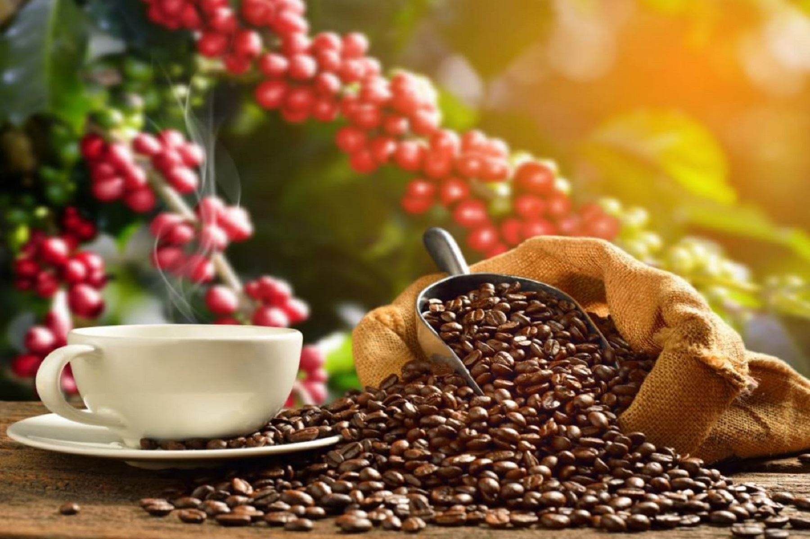

Our awards since our foundation
2014
- Fifth place in the municipal roasted coffee competition in San Francisco in the department of Cundinamarca
2015
- Fifth place in the municipal roasted coffee competition in San Francisco in the department of Cundinamarca
2016
- Participation in the municipal roasted coffee competition in San Francisco in the department of Cundinamarca
2017
- Second place in the municipal roasted coffee competition in San Francisco in the department of Cundinamarca

2018
- Third place in the municipal roasted coffee competition in San Francisco in the department of Cundinamarca
2019
- Fair recognition in the municipal competition of San Francisco in the department of Cundinamarca
2020
- Fifth place in the municipal roasted coffee competition in San Francisco in the department of Cundinamarca
2021
- Participation in the municipal roasted coffee competition in San Francisco in the department of Cundinamarca
2022
- Second place in the municipal roasted coffee competition in San Francisco in the department of Cundinamarca

2023
- Third place in the municipal roasted coffee competition in San Francisco in the department of Cundinamarca
2024
- First place in the municipal roasted coffee competition in San Francisco in the department of Cundinamarca
- Fair recognition in the municipal competition of San Francisco in the department of Cundinamarca